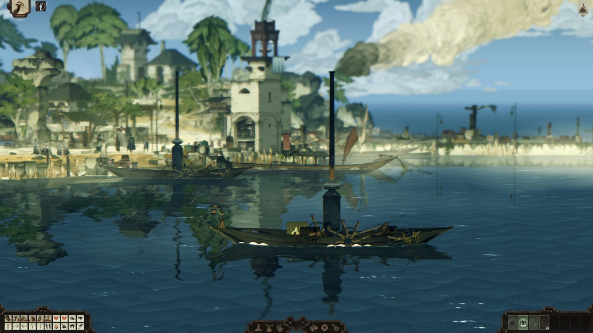

I created a mini-trailer promoting the social aspects of the game.
The game features a lot of random events and unpredictable NPC behaviour that could disrupt the game capture.
To be able to control and capture the scenes exactly how I wanted, I decided to record offline in-engine.
This also allowed me to create custom editor tools to control the two characters simultaneously.
I created the end slate and cinematic captions in Adobe After Effects, using sprites from the game.
I designed a mousepad for the merch store. Here's the largest size.
I also created the package designs for the mousepad boxes. Here's the smallest one.
Some screenshots I created for the Steam page.
